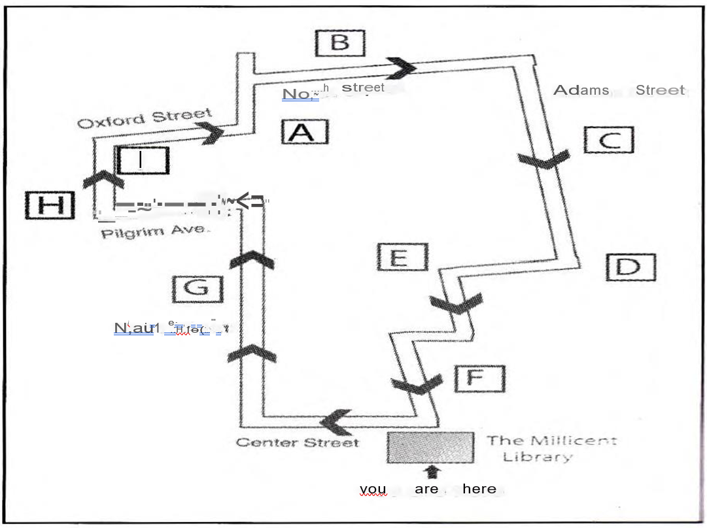

Complete the form below.
Write NO MORE THAN THREE WORDS AND/OR A NUMBER for each answer.
| Address | 41, 1. Barrowdale WH4 5JP |
| Telephone | 2 |
| Vehicle location | in 3 near main road(A69) |
| Type of vehicle | 4 |
| Make | Catala |
| Model | 5 |
| Present colour of vehicle | 6 |
| Vehicle number | S 322 GEC |
| General condition | poor – one 7 cracked windscreen |
| Length of time at site | 8 |
| Land belongs to | 9 |
| Last owner | no information available |
| Other notes | vehicle does not belong to a 10 resident |
Complete the notes below.
Write NO MORE THAN TWO WORDS AND/OR A NUMBER for each answer.
Label the map below.
Write the correct letter A-I next to Questions 18-20.

Choose the best answer A, B or C.
What does each university facility have?
Choose your answers from the box and write the correct letter A-G next to Questions 24-27.
Complete the summary below.
Write NO MORE THAN TWO WORDS for each answer.Complete the notes below
Write NO MORE THAN THREE WORDS for each answer